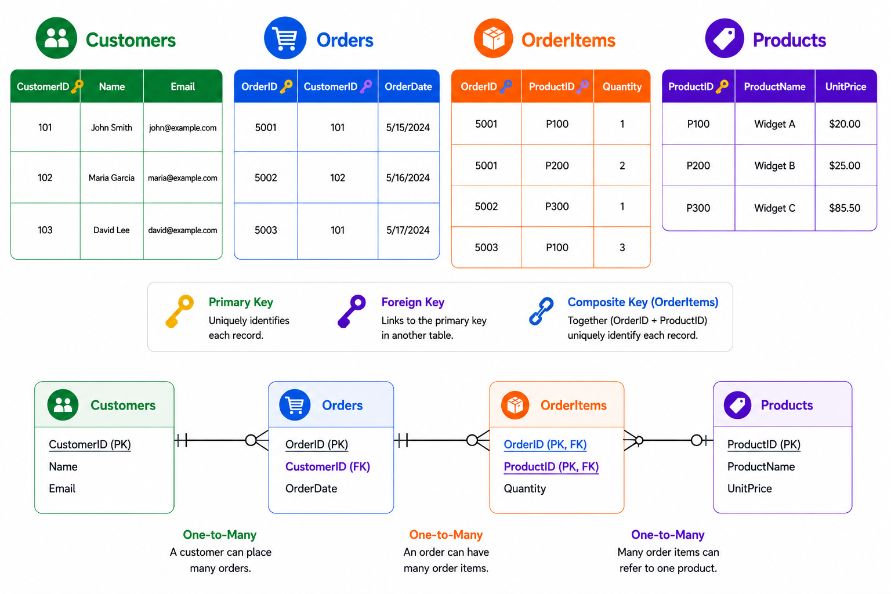
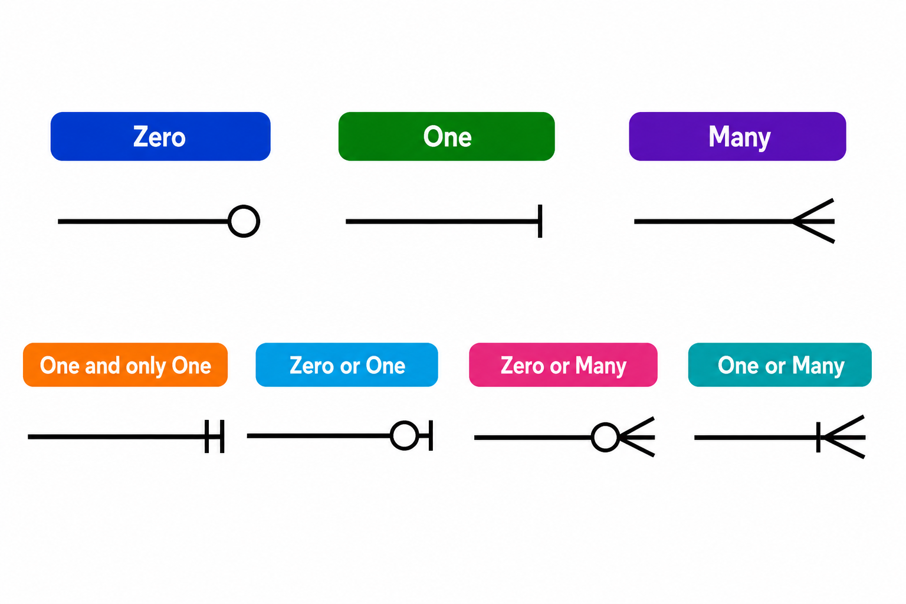
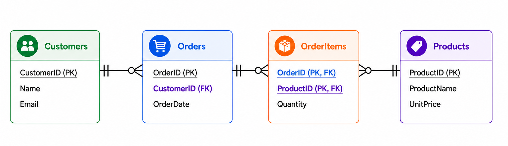
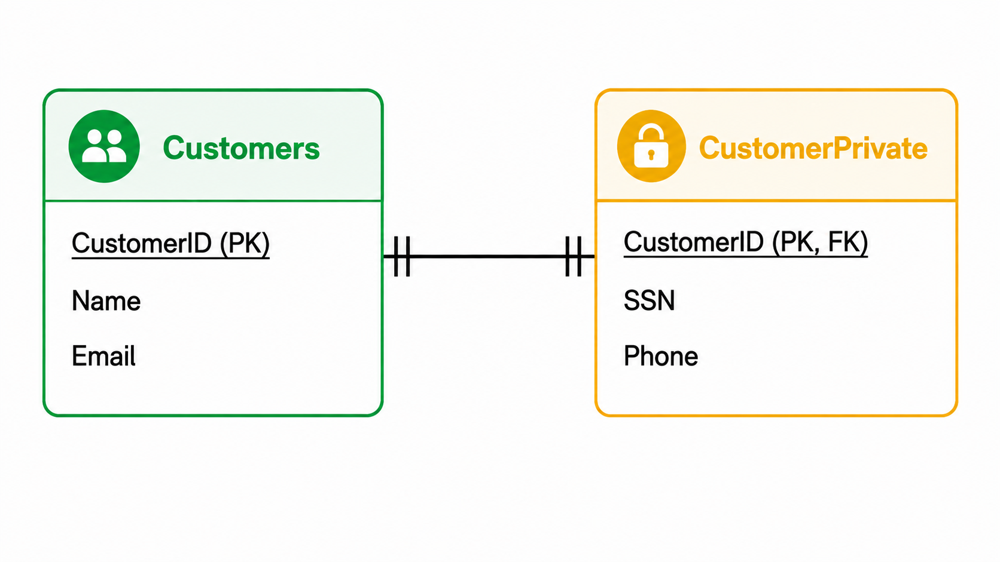
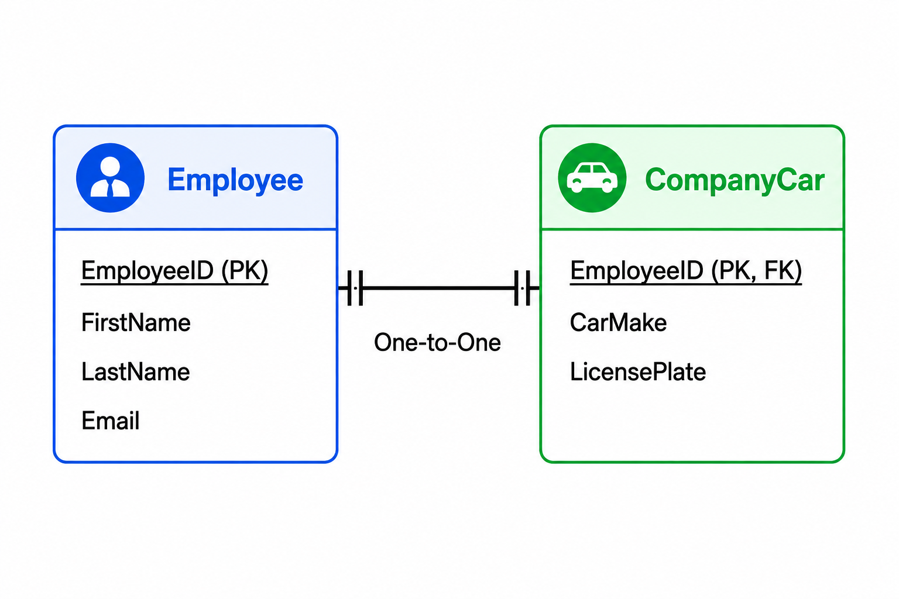
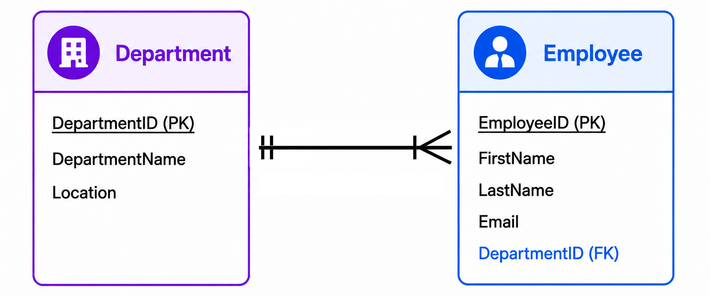
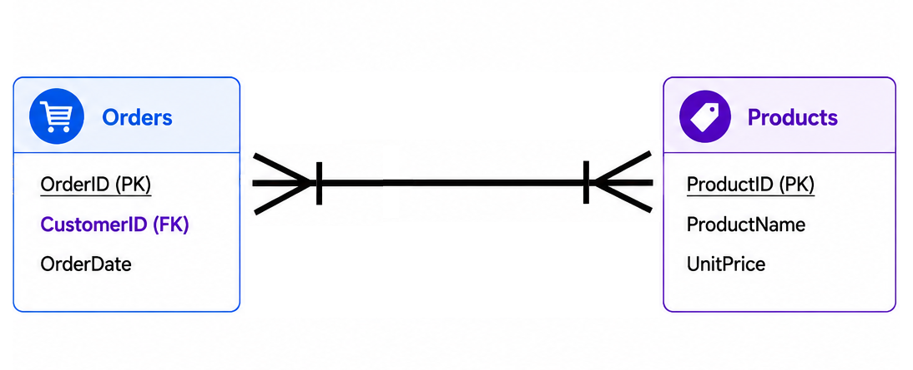
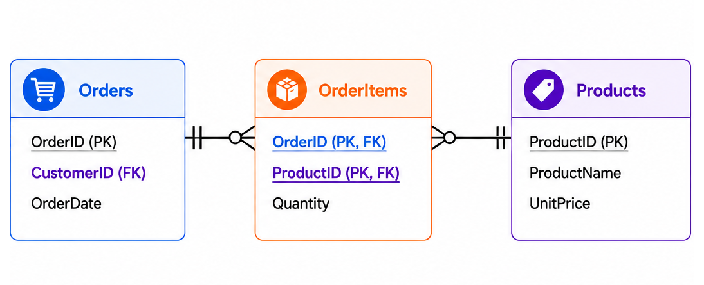

Relational Modeling
A relational database organizes information into tables that represent real-world entities and the attributes that describe them. Relational modeling is the process of deciding what those tables should contain and how they should connect. A thoughtful model reduces unnecessary duplication, supports referential integrity, and makes information easier to retrieve.
Each table represents an entity or a closely related group of items. Each row, or record, represents one instance of that entity, while each column, or field, represents an attribute. When the design is shown in an entity-relationship diagram (ERD), the focus is on the structure of the database rather than its actual data values. An ERD makes entities, attributes, keys, and relationships visible before the database is built.

Relational and Nonrelational Models
Relational modeling is one way to organize data, but it is not the only one. Document databases store related information in flexible, JSON-like documents. Key-value databases pair a unique key with a value for fast retrieval. Graph databases represent entities as nodes and their connections as edges.
Relational models emphasize defined structure, keys, and relationships. Nonrelational models may emphasize flexible records, direct lookup, or connected networks. No model is best for every situation; the choice depends on the data, how it will be accessed, and the questions the system must answer.
Relationships and Cardinality
In an ERD, lines connect entities to indicate the type of relationship. Our example uses crow's foot notation to show how many records can participate in a relationship. The term 'Cardinality' also describes the relationship between entities. Together, these symbols help describe business rules precisely.

Comprehension Check 1 of 5
Reading an ERD
Consider a customer who may place multiple orders. One customer can have zero or many orders, but each order belongs to one and only one customer. An order can contain multiple order items, while each order item belongs to one order. Each order item refers to one product, and a product can appear in many order items.
These relationships reflect the way the business operates. The ERD helps designers check whether the model accurately represents those rules before creating tables or entering data.

Comprehension Check 2 of 5
One-to-One Relationships
A one-to-one relationship means each record in one entity is associated with no more than one record in the other entity, and vice versa. This relationship is less common than one-to-many relationships. One example is separating private customer information into a second table so access can be restricted. Another example is an employee assigned one company car, when each car is assigned to only one employee.


One-to-Many Relationships
A one-to-many relationship is one of the most common patterns in relational databases. One record in the first table can be related to many records in the second table, but each record in the second table belongs to one record in the first. A customer can place many orders, and each order belongs to one customer. Likewise, one department can have many employees, while each employee belongs to one department.

Comprehension Check 3 of 5
Many-to-Many Relationships and Linking Tables
A many-to-many relationship occurs when records in each of two tables can relate to many records in the other. For example, one order can contain many products, and the same product can appear in many different orders. Relational databases resolve this relationship by introducing a third table, often called a linking or associative table.
In this example, the OrderItems table connects Orders and Products. It turns the many-to-many relationship into two one-to-many relationships: one order can have many order items, and one product can appear in many order items. The linking table can also store facts that belong to the relationship itself, such as quantity. Quantity does not belong in Orders because an order can contain several products, and it does not belong in Products because the quantity can vary from one order to another.


Comprehension Check 4 of 5
Keys in Linking Tables
A linking table commonly uses the primary keys of the two related tables as foreign keys. Together, those values can form a composite primary key. A composite primary key uses two or more columns to uniquely identify a row. In OrderItems, the combination of OrderID and ProductID identifies a product’s occurrence within a particular order. The two values work together because neither one alone identifies the order-product combination.
Comprehension Check 5 of 5
Why Relational Modeling Matters
A well-designed relational model provides a blueprint for the database. It identifies the entities the organization needs to track, the attributes that describe them, and the relationships that connect them. Clear models make it easier to build tables, establish keys, enforce business rules, and maintain reliable information. Once the relationships are understood, the next step is to organize the attributes within those tables so that facts are stored in the right places. That process is called normalization.
Human–AI Collaboration and Prompt Design
A prompt is an instruction or set of instructions provided to an AI system. Effective prompts describe the task, provide relevant context, identify the desired format, and establish limitations or evaluation criteria. Prompt design is not simply a matter of asking an AI tool a question. It is a process of defining a problem clearly enough that another person, computer program, or AI system can act on it. Strong prompts often include the role of the AI, the purpose of the task, the available data, the expected output, and examples of what a successful response should contain.
In professional settings, prompt design is most useful when it supports a repeatable workflow. An analyst might ask an AI system to explain a dataset, suggest possible data-quality checks, generate a formula, or propose alternative interpretations. The analyst must then test the response against the data and the business question, making sure the response is accurate and relevant. AI may produce several reasonable-looking answers, but the professional must decide which answer is appropriate and how it should be improved before it is used.
These practices reflect the growing importance of hybrid work in Information Systems. Prompt design and AI tool fluency are increasingly valuable, but most IS professionals will use AI alongside their own knowledge rather than work with AI independently. AI may handle routine portions of a task while humans provide judgment, context, communication, and accountability. Overseeing AI-generated analysis, verifying AI work, and coordinating multiple AI tools within a larger workflow are examples of these hybrid skills. Developing these abilities prepares students for careers in data analysis, business analysis, automation, consulting, and systems development, where directing, evaluating, correcting, and improving AI output will be more valuable than simply knowing how to generate it.
Chapter Completion
Answer all five comprehension questions, then check your work.
Chapter complete
Copy or write down this access code. You will need it later in class to receive your points.
entity-relationships